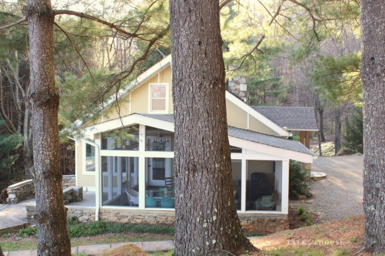
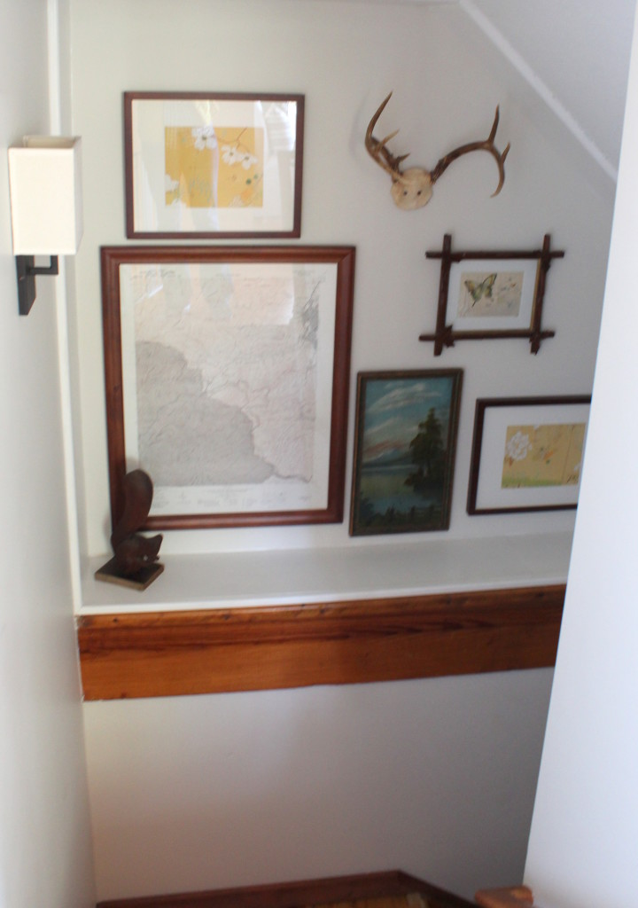
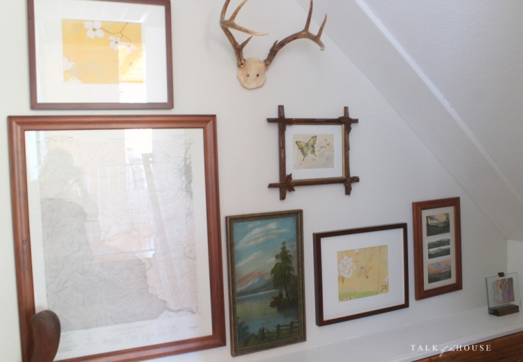

.png)
.PNG)
.PNG)
.PNG)
.PNG)
.PNG)
.JPG)
.JPG)
.PNG)
.PNG)


And now for the rest of the story. (Do I sound like Paul Harvey? 🙂 ) It’s really the rest of the tour. If you missed part 1, you can see it here in the previous post.
So where were we? Oh yes, we were enjoying the spaces in this lovely vacation home we stayed in a week or so ago, and we had wandered through every place on the main level. Now it’s time to tour the downstairs….
Admire the map, nature art, vintage paintings, and postcards as you head down the steps.
This is what you see when you reach the bottom.
Can you believe it..another living area?!
 It was my favorite space in the house…very cozy!
It was my favorite space in the house…very cozy!
I know what you are thinking…She likes it the best because it has red.
Well guess what. You are right! I do. 🙂
I believe the photo below shows a map of the property that was left in the house when Angela and her husband purchased it.
Nice pop of color with the red plaid throw (from Target) on the chair in the corner.
(Made me want to pull mine out and throw it over a chair when we got home. 🙂 )
The stairs we just came down are behind the stone fireplace, and a washer and dryer are located behind the double doors you see in that little hallway. Next we are going through that door on the right.
It leads into this guest bedroom with the giant butterfly. Again, Angela used shades of blue in the bedroom.
The dresser and mirror in this room were mismatched pieces that were unified with coordinating paints.
There is a private bathroom off to the side of the room.
Unfortunately I only photographed this small part of it (but at least it is a cute small part!)
There is one more area for us to see. We walk back through the basement living room and out the other side. That is where we will find this wonderful children’s room!
Such simple but charming art work!
My camera lens does not take a wide shot, but you need to know that there are built in bunks like these on both sides of this bedroom so that 4 children can comfortably sleep in the room. What a fun space!
Each bed has its own little light. 🙂
Our last stop is right across from the bunkroom at the children’s bathroom. And once again, I only took one photo of the space. 🙁
The final photo I want to share with you is one we took at sunrise one of the mornings we were there. I mentioned in part 1 that I wanted a place that was peaceful and quiet for this trip, and I think this photo shows that we found such a place with the cottage. It provided not only that but so much more…a place to recharge while taking in the beauty of nature.
If you would like information on renting the cottage, it is listed here on VRBO. If you would like to see more photos of it, look for its feature in the Spring 2016 issue of Better Homes & Gardens’ Do It Yourself magazine.
And don’t forget we are celebrating 4 years of blogging here at Talk of the House with a giveaway that ends on Sunday April 24, 2016….a $50 Amazon gift card and two novels by the gifted North Carolina author, Kristy Woodson Harvey!
To enter, simply leave a comment on any/or all posts that publish between 4/17/2016 and 11:59 p.m. Eastern time 4/24/2016 (on the blog itself – not an email reply please)- one comment per post please. I’ll announce the winner, chosen from a random drawing, in the first post that publishes after that.
Thank you so much for following along as we toured the vacation home in North Carolina. I’ll have places of interest, restaurants, and shops from our trip for you in our next post. I hope you’ll be back again for that! 🙂
Until next time…


.PNG)
I love your blog. I love to read about all the places you visit.
Wow! The downstairs is just as beautiful as the top. I especially love the colors in the little sitting area, and the basket pull-lights above each bunk bed are cute as pie. But that view in the last photo is uh-mazing! It takes my breath away. I don’t think I would ever want to get up out of those chairs. No words! 🙂
Love this entire house! Especially the huge bird picture downstairs!
Your photographs are beautiful and I imagine looking out over the mountains. I had to laugh because my parents listened to Paul Harvey and I heard his voice on the radio every single morning growing up!! Thank you for the reminder of a wonderful memory.
those darling bunkbeds would make it so much easier to take kids along. I imagine it would entertain them enough to go to bed early.
Your photograph taken at sunrise is just spectacular …..if I were you I’d want to print and frame it, so I could see it every morning! I love how they’ve decorated the cottage and that they have a kids bunk room!! I just love “bunk rooms” ….imagining children excitingly sharing a midnight feast!! 🙂
Congratulations on your Blogging Anniversary. I’m so glad you decided to write a blog …it’s definitely one of my favourites and always so well written!
Take care …..
Rosemary
What a wonderful cottage! We moved to Waynesville, NC a couple of years ago when my husband retired and have not regretted it for a moment. I had never lived where the views are so breathtaking and there are four for-real seasons. Heavenly!
I hope you thoroughly enjoyed your stay and will come back!
I keep looking at all your pix of the cottage over and over again. What a lovely place to live in!!
I have been going back and reading some of your older post and enjoy reading of your life experience, you have the right idea when it comes to enjoying life and you seem to always doing for others. I hope you get to enjoy many more getaways and remember to take us along.
So glad you were able to get away and relax! Now that you and your husband are both retired, I hope there will be many more fun trips and adventures ahead of you! I remember many years ago in high school when I filled out a “Where will you be in 10 years?” assignment and my answer was “living in North Carolina”. Your post brought that memory back to me. 🙂 While I may not be living there currently, it certainly does look like I may have found another great vacation spot! Thanks for sharing all the details!
Such a beautiful place! This second living room is definitely my favourite too! 🙂
Xo
Claire
I love the downstairs, shiplap!
The outside of the house doesn’t do the inside justice. Beautiful.
I am sure it was peaceful, I have to ask was it just the two of you?
Thanks for sharing, Cindy
What a beautiful cottage!! I love your blog!
You are the best tourguide for the Southeast! The tourism board should hire you! I keep adding to my list of must see’s thanks to you!!
North Carolina is a favorite of mine. The vistas are breathtaking and there are so many interesting places to visit. Good eye candy. Thanks for the photos!
Peaceful view.
I love the splashes of red, too. This has given me some nice ideas. Thank you.
So fun to see the photos of the rest of the cottage–your sunrise shot is absolutely breathtaking!
What a beautiful, charming home. Thank you so much for sharing with us!
Love this artistically decorated mountain house! What an amazing view! My husband and I have a cabin in the western NC mountains, with an unfinished full basement. With 8 grandchildren, I love the bunk room. Am definitely saving that idea, until we can put in a bedroom & bath for the grands. Thanks for sharing!!
Are those the Blue Ridge Mountains? Breath taking!
Very pretty! That is a big house for just the two of you! I hope you sat outside and sipped some coffee while enjoying that view….and maybe read a little. I can’t wait for your next post!!!
Kelly,
That last photo says it all. I love peaceful and serene it looks. What a perfect getaway place you guys to visit. There are lots of cozy places to settle in and read a good for sure. Thanks for sharing. Take care.
Dawn
Would really love to read these books one early spring morning on our porch. Thanks for your post.
Loved part 2 of your getaway!!
What a lovely cottage and you captured a beautiful sunrise.
My favorite picture of all from these posts was the very last one. I could see myself there!
I’ll admit, after viewing the last post, I didn’t think it could get better. I was wrong!
The downstairs is a hidden treat. I love the living area, but the kid’s room is like icing on the cake. It is too cute! And you know how to end a post to make us want more. That view..oh, my goodness gracious sakes!! Looking forward to your adventures, though it had to be hard to leave such a tranquil spot. Thanks, Kelly.
Looks like a beautiful place for a vacation!
Boy would I love to be sitting in one of those Adirondacks!!
What a beautiful place. Putting this on my bucket list.
The views are gorgeous! Great pictures.
I would probably sit on that deck all day and enjoy the scenery.
The style is different than yours but it looks so peaceful.
Wow! What a gorgeous view! This would definitely be a great place to relax and unwind. Thanks for sharing!
Enjoyed part #2! I think I like the lower level even better! Once again,enjoyed the art work, especially the one with birds. This cabin would be great for large family gathering. What a view you had!!
I like the living area downstairs also. She really did a great job decorating the entire cottage while keeping it light and airy. The best part is definitely that view though!! 🙂 I’m looking forward to your next post! 🙂
Such a cute place – and so much room! You could have brought the whole family! I live in the NC mountains near Asheville, and my husband’s parents grew up in the county next to where we live. After my mother-in-law died, we found postcards from the 1930’s of Lake Lure and Chimney Rock, which are a short drive from us. I had them mounted in an antique frame for my husband’s birthday, and now they hang in our cabin.
The last picture…beautiful! Such a fantastic view of God’s creation!
Love the last photo – mountains are my go to for relaxing.
Beautiful! I live in the NC mountains and I couldn’t imagine living anywhere else. 🙂
What a charming place for a get-a-way! The colors and the setting are so peaceful!
beautiful cabin. Would love to stay there. Thanks for sharing.
Love the downstairs too! Except the view is a bit better upstairs. Those bunks reminded me of some they did in one of the hgtv dream homes, with the lights for each bed. Great idea!
That view from the adirondack chair is awesome, a great place to sit and enjoy those lovely mountains. When my daughter lived in D.C., that was my favorite part of visiting her – driving thru the Blue Ridge Mountains. The drive now, to Texas – meh – nothing to see AT ALL!!! Thanks for the tour, and happy blog-iversary!
Kelly,
Such a great getaway in such a pretty setting. Happy you got a break between the activity of the past several months. It’s always so nice to recharge the batteries. 🙂
xo,
Karen
I like the yellow wire baskets over the lightbulbs in the kids’ bunks. Great inexpensive solution with a low wattage bulb.
Love the gallery wall going down the stairs!
Thanks for a great tour!
What a wonderful relaxing view!
I loved the lower part of this cottage but the view is my favorite. Thank you for all your years of blogging. I love your every post and your trips are the closest I shall ever be to those places. Please keep up the great work.
Lovely place! Thanks for blogging.
I’m so glad you were able to unwind and relax in my home state. I’m in Georgia, now, but still love the NC mountains. Nothing quite like it.
Happy Anniversary! Thank you for 4 years of inspiration! The house is beautiful, but that view of the sunrise….incredible! Thanks Kelly!
Congratulations on four years of beautiful blogging! Nice post….. looks like a lovely place to stay.
Thanks for sharing this beautiful retreat with us! Love your blog!!
Such a lovely, peaceful view. You could just sit out there and think…or not. Or read a book!
Beautiful!!
This post makes me want to pack up and head on over to NC. So beautiful anytime of year but especially now.Don’t you just love the dogwoods in bloom?
I love the rock fireplace. And oh,that crewel pillow on the chair goes perfectly w/red plaid throw.
Thanks again for your great posts.
Love all the warm wood tones-especially on the ceiling. How easy to would be to relax and enjoy life there : )
Shelley
I love this house, the pops of red are my favorite too. And the view! Oh makes me want to rent it for a weekend away! Thanks for sharing!
Truly a beautiful mountain retreat, although when I’m looking to unplug and relax, nothing calls me more than the seashore! Thank you for sharing!
This house/cottage is as charming as I remember in the posts from The Nester. Those adirondack chairs are the perfect spot to watch the sunrise…what a view.
Happy Blogging Anniversary Kelly! Blogging has certainly added richness to my life and I love all my Blog Friends, including you!! I wanted to have a bunk room in our getaway house but decided that two bedrooms with queen beds would work better for our needs. We want to be able to invite some couple friends and I do not think they would want to sleep in bunk beds.lol
Such a lovely, peaceful view! I wish I lived closer.
Thank you for sharing this home and all its beauty. Framed postcards, why didn’t I think to do that? I have the perfect space here in our smallest bedroom(aka)our office. I have a large collection of postcards that I hold dearly. Many were written by my mother and others from my best friend of forty-eight years. Both are deceased. I love the wall art of the birds. I would put that in our family room in a heart beat.
What a lovely house! I think my favorite room was the downstairs living room. Thanks for sharing!
The level is as wonderful as the main floor! The bunks are perfect.
A cozy, beautiful cottage. The sunrise looks spectacular. I can see why you enjoyed your time there.
We need to visit this place. Hope to bring our kids and their little sweethearts here someday!
I used to live in Waynesville, NC when my husband was the District Ranger on the Blue Ridge Parkway. I hope you got to go visit all the shops on Main Street in town and that you spent some time on the Parkway. When my husband retired he was the first person to walk the entire Parkway and wrote a book about his adventure called “The Blue Ridge Parkway by Foot: A Park Ranger’s Memoir”. He told what it was like to be a Park Ranger, but also about this walk. What an adventure it was!
A lovely and relaxing cottage to spend a vacation and take in the breathtaking views! Thank you for sharing your photos!
The house is charming (I particularly like the framed prints and painted furniture). But the view. The view is breathtaking. Thanks for sharing.